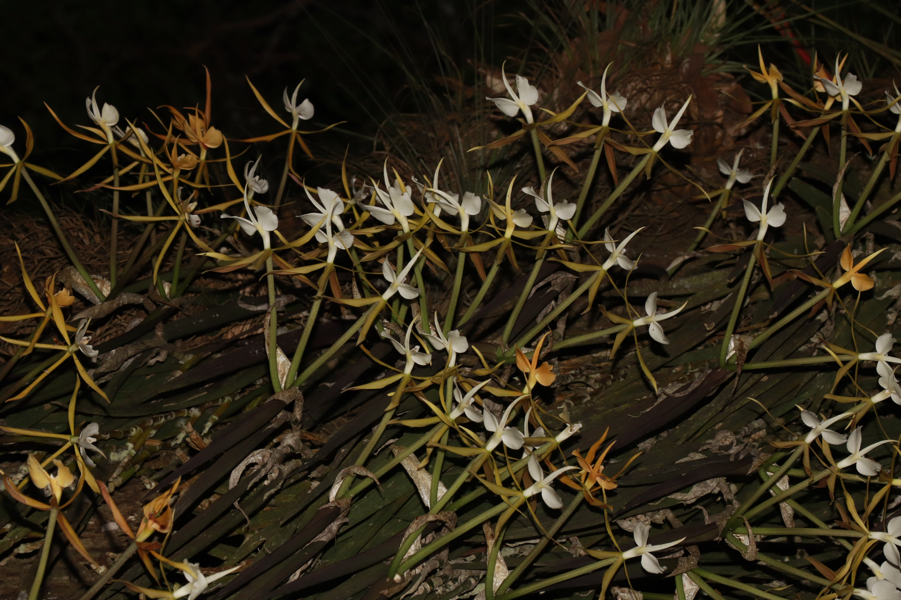
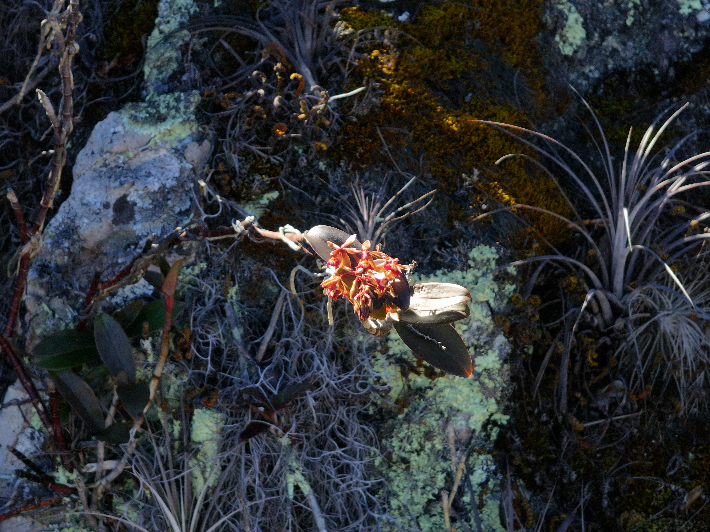
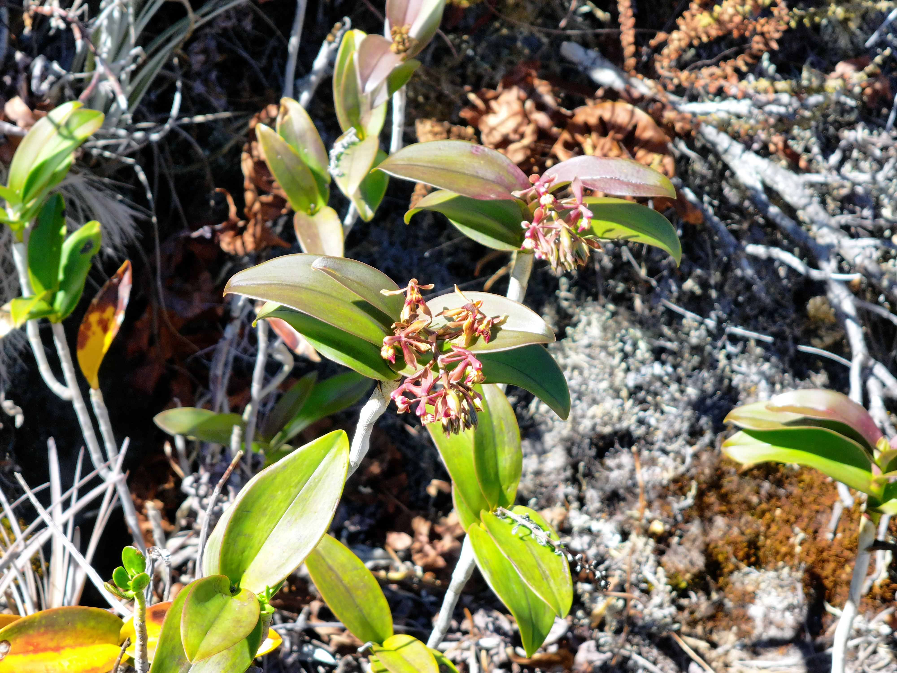

The pendant-leaf giant of the cloud forest canopy — a species that can only be properly seen by climbing into the trees where it lives.





Most of the orchids we write about can be held in a hand. Epidendrum parkinsonianum cannot. Mature specimens carry pendant, strap-like leaves well over a metre long, hanging from cloud forest branches far overhead — visible from the ground only as dark silhouettes against the sky.
The species is a strict canopy specialist of wet oak and cloud forests from Mexico south to Panama. Its pendant growth form is a direct adaptation to high-light, high-humidity life on horizontal branches — where water drains quickly but fog keeps the plant hydrated.
Flowers are large, pale green or ivory, star-shaped, and open in the afternoon to release their fragrance at night. They are pollinated by long-tongued moths — a system we know exists at this genus level, but that has been directly observed remarkably few times in the wild for this species.
Selective logging of the largest host trees is the primary threat. When a 40-metre-tall oak is felled, every canopy epiphyte falls with it — and in the case of E. parkinsonianum, that is often a mature individual of several decades' age. We work with private landowners to protect large-diameter host trees in the landscapes where the species persists.